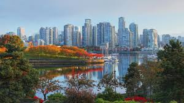

Vancouver

Vancouver, en la costa oeste de Canadá, es conocida por su impresionante paisaje natural, su vibrante vida urbana y su diversidad cultural. Los visitantes pueden disfrutar de actividades al aire libre, explorar el Parque Stanley y disfrutar de la comida y el arte local.
Toronto
Toronto, la ciudad más grande de Canadá, es un centro cultural y financiero con una rica historia y una vibrante escena artística. Los visitantes pueden visitar la Torre CN, el Distrito de Entretenimiento, el Museo Real de Ontario y mucho más.
Parque Nacional Banff

El Parque Nacional Banff, en las Montañas Rocosas de Alberta, es famoso por sus paisajes espectaculares, lagos cristalinos, picos nevados y vida silvestre. Los visitantes pueden explorar senderos para caminatas, disfrutar de actividades al aire libre y relajarse en aguas termales naturales.